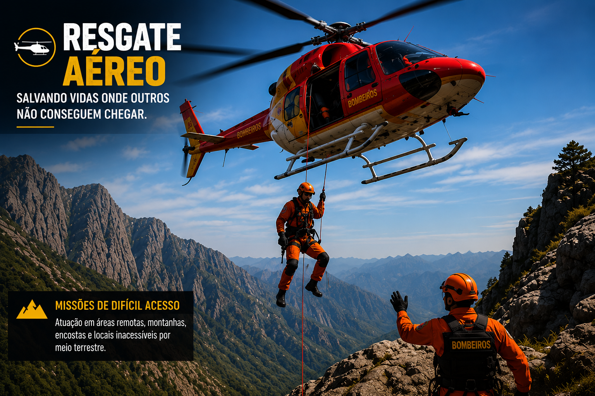
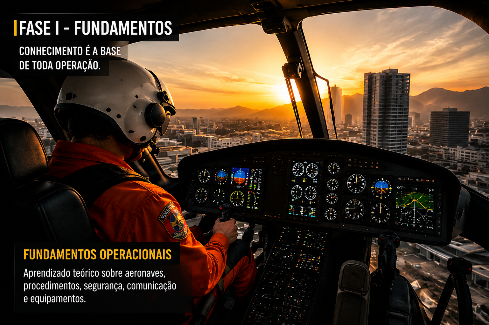
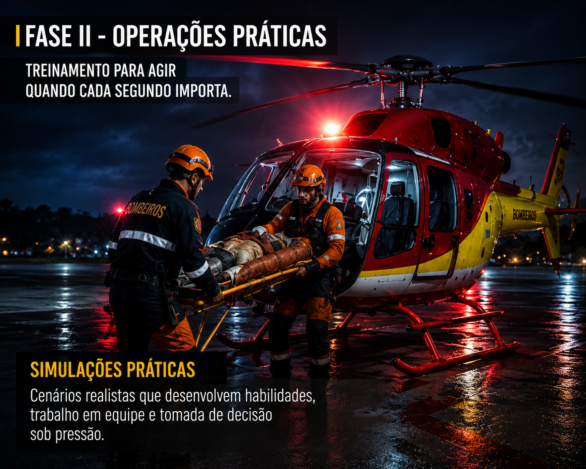
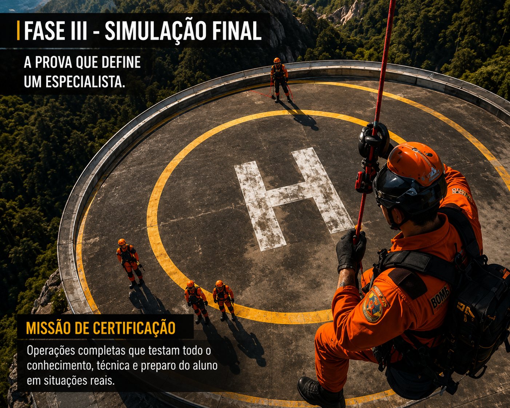
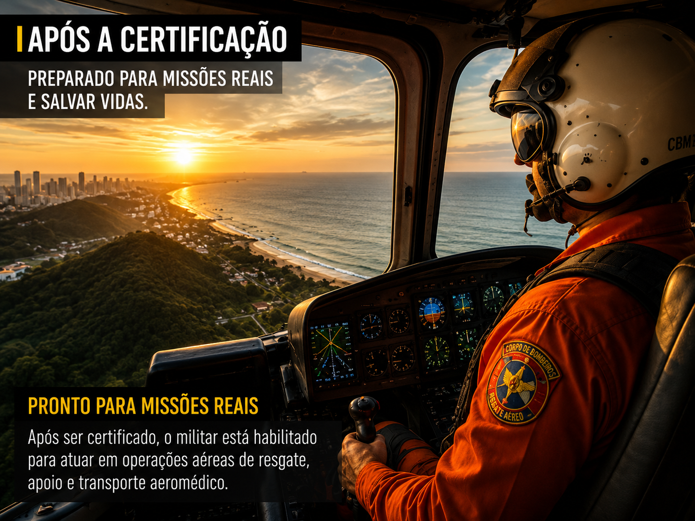

Resgate Aéreo
"Quando o acesso terrestre termina, começa a missão da equipe aérea."

O Curso de Resgate Aéreo
É uma das especializações mais prestigiadas do Corpo de Bombeiros, destinada aos militares que desejam atuar em operações de alta complexidade utilizando aeronaves como principal meio de resposta.
A formação prepara o operador para realizar resgates em locais de difícil acesso, prestar apoio em grandes ocorrências, transportar vítimas em estado crítico e atuar em conjunto com pilotos e equipes terrestres. Cada missão exige disciplina, preparo técnico, comunicação eficiente e total comprometimento com a segurança operacional.
Ao concluir todas as etapas, o militar estará apto a integrar oficialmente a equipe de Resgate Aéreo da corporação.
Objetivo do Curso
Capacitar o militar para atuar em operações aéreas de salvamento, desenvolvendo conhecimentos técnicos, habilidades práticas e capacidade de tomada de decisão em ambientes de alta complexidade.
Requisitos
Para ingressar no Curso de Resgate Aéreo, o militar deverá:
- Estar devidamente ativo na corporação;
- Demonstrar disciplina e comprometimento;
- Possuir bom desempenho operacional;
- Ter aprovação da coordenação de cursos, quando necessário.
Estrutura do Curso
O Curso de Resgate Aéreo é dividido em três fases eliminatórias, onde cada etapa avalia diferentes competências do aluno. Somente os militares aprovados em uma fase poderão prosseguir para a seguinte.

FASE I — Solo (Doutrina Operacional)
Objetivo: Apresentar ao aluno todos os fundamentos necessários para atuação em operações aéreas.
Conteúdo:
- Introdução ao Resgate Aéreo;
- Normas de segurança operacional;
- Equipamentos utilizados;
- Comunicação entre piloto e operador;
- Procedimentos de embarque e desembarque;
- Organização da equipe durante a missão.
Avaliação: O militar deverá demonstrar conhecimento teórico e executar corretamente todos os procedimentos básicos apresentados durante a instrução.

FASE II — Asas (Adaptação Aérea)
Após concluir a etapa de fundamentos, o militar inicia o treinamento prático em operações aéreas, enfrentando cenários que exigem precisão na pilotagem, estabilidade da aeronave e perfeita coordenação entre piloto e operador.
Nesta fase, o foco é desenvolver a confiança em voo e preparar a equipe para atuar em ambientes complexos, principalmente sobre áreas aquáticas e regiões de difícil acesso.
Durante esta etapa serão realizados treinamentos como:
- Sobrevoo em baixa altitude sobre rios, lagos e áreas costeiras;
- Passagem controlada sob pontes e obstáculos para avaliação da estabilidade da aeronave;
- Simulações de resgate aquático utilizando o helicóptero como plataforma de apoio;
- Extração e transporte de vítimas em áreas alagadas ou de difícil acesso;
- Coordenação entre equipes aéreas, aquáticas e terrestres durante a operação;
- Procedimentos de comunicação e tomada de decisão sob pressão.

FASE III — Águia (Missão de Certificação)
A última fase representa uma operação completa. O aluno será colocado diante de diferentes cenários de emergência onde deverá aplicar todos os conhecimentos adquiridos durante o curso.
As ocorrências poderão envolver:
- Acidentes em áreas de difícil acesso;
- Resgates em montanhas;
- Apoio em desastres naturais;
- Evacuação aeromédica;
- Transporte emergencial de vítimas.
Nesta etapa será avaliada toda a postura operacional do militar.
Critérios de Aprovação & Certificação
Critérios Avaliados
O militar deverá obter desempenho satisfatório em todas as fases para receber sua certificação, sendo avaliado em:
- Disciplina e Trabalho em equipe;
- Comunicação e Segurança operacional;
- Conhecimento técnico e Cumprimento dos protocolos;
- Controle emocional e Tomada de decisão.
Competências Desenvolvidas
- Liderança operacional;
- Comunicação eficiente;
- Trabalho em equipe e Gestão de riscos;
- Rapidez na tomada de decisões;
- Precisão técnica e Organização operacional;
- Controle emocional em situações críticas.

Após a Certificação
Ao concluir o Curso de Resgate Aéreo, o militar estará autorizado a integrar oficialmente a equipe, participar de operações com aeronaves, apoiar ocorrências complexas, realizar transporte aeromédico e auxiliar outras equipes especializadas.
Importância da Especialização
O Resgate Aéreo representa uma das áreas mais estratégicas da corporação. Sua atuação possibilita alcançar locais inacessíveis por vias terrestres, reduzir significativamente o tempo de resposta e aumentar as chances de sucesso em operações de salvamento.
"Voamos acima dos obstáculos para chegar onde a esperança ainda precisa pousar."
Resgate Aquático
Técnicas de salvamento em mar, rios e áreas alagadas.
(Conteúdo em construção)
Resgate Montanha
Operações de busca e salvamento em altura e terrenos irregulares.
(Conteúdo em construção)
Paraquedismo
Formação e capacitação em saltos táticos e de resgate.
(Conteúdo em construção)
Piloto
Instruções e qualificações para pilotagem de aeronaves do CBM.
(Conteúdo em construção)